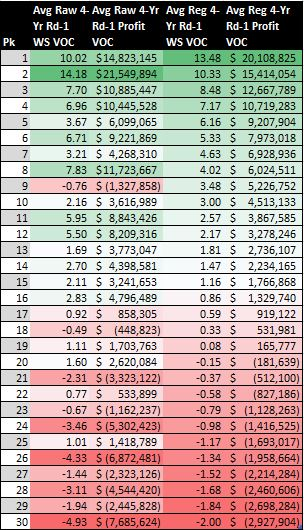
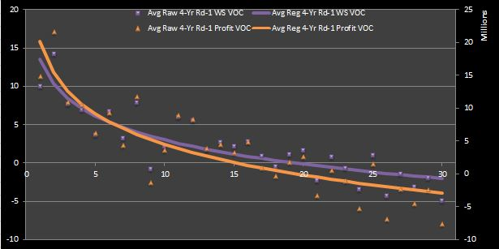

4 The Value of Perfect Information and the NBA Draft
In this chapter I will take a look at the value of perfect information (VOPI) in the context of the NBA draft, using some of the data that I derived in my previous chapter in which I estimated the value of NBA draft picks. I begin with an isolated overview of some relevant decision analysis terms before discussing how they can be applied to better understand the NBA draft.
4.1 Some Theory
VOPI, or value of clairvoyance (VOC), is a decision-maker’s indifferent buying price of perfect information.45
The CE of an option is the quantity (typically stated as a monetary value) that a decision-maker can be guaranteed and feel indifferent between receiving this quantity or choosing its alternative with some uncertainty of receiving its quantifiable return value. Put another way, given three options, a CE is the quantity that would make the decision-maker indifferent to receiving the middling option (i.e the option with a level of preference between that of the other two options) for certain or entering a dual-outcome game of chance in which there is some well-defined probability between 0 and 1—known as indifference probability (IP)–of receiving the more preferable option and its payoff, and the remaining probability of the less preferable option and the quantity associated with it.46
Having defined CE, we can now define the delta principle. We say that a decision-maker abides by the delta principle if his CE is independent of his existing wealth. To better understand the delta principle, we should try to contextualize the relationship—CE independent of wealth—that needs to be made for the principle to be true. For example, a very poor person—having very little to lose in the first place—is probably willing to give up a lot for a very small chance at earning a little. Consequently, we can say that the delta principle does not apply to poor people.47
Looking at the delta principle in another way, we can say that a decision-maker follows the delta principle if his buying and selling prices for any given lottery are equivalent. Anyways, no matter the manner one chooses to understand these ideas, the primary implication of the delta principle (in conjunction with CE and IP) is that a decision-maker’s utility function can be modeled as a linear or exponential. Without going into detail about utility function, suffice it to say that this result is extremely important for simplifying calculations involving risk and decisions.
Returning to the discussion of VOC, if we make the assumption that a decision-maker follows the delta principle, then we can also define VOC as the difference WITH free perfect information and the value WITHOUT free perfect information. In this definition you should be careful to observe that, even though the possession of information is negated when going from the first to second statement, the object of possession—perfect information—is assumed to be free in BOTH cases. Thus, we should note that VOC is not just the difference of the values with and without perfect information; instead, it is the value difference with and without FREE perfect information.
4.2 Contextualizing VOC
If you recall, time I concluded my guide to estimating NBA draft pick value with regressed curves for the average four-year empirical and theoretical profits for first-round picks in the NBA draft using WS and rookie wage scale data from 1995 to 2012. So how can we incorporate the concept of VOC to provide a unique perspective on this information?
If I take the mathematical difference of the regressed theoretical and empirical profit data sets, I can find the VOC for each top 30 draft pick in terms of win shares (WS), win shares values (WSV), and profit. (Note that the VOC of cost cannot be found without having the “empirical” cost of each player.) One should interpret the theoretical curve as the profit of each draft slot if all teams have perfect information available to them and pick the best possible player. By “best possible player” I mean the remaining player with the highest number of actual WS earned after four years of those players not already selected at a given point in a hypothetical draft where teams drafty ideally.48
Figures 1 and 2 show VOC in tabular and graphical form for the WS and profits points calculated after regressing over only the first-round empirical and theoretical data. ((As a technical note, I should make the reader aware that the WSV VOC is simply equivalent to the sum of the theoretical cost and the profit VOC for a given draft slot. Thus, I have chosen not to show it for the sake of making the visualizations more compact.49
Figure 1: Average Raw and Regressed First-Round WS andProfit VOC
Figure 2: Average Raw and Regressed First-Round WS and Profit VOC
Just like the regressed curves for empirical and theoretical profits, the VOC curves for WS and profit exhibit diminishing returns. (The same can be shown for WSV VOC.)
4.3 Interpreting VOC
Let’s consider the profit VOC curve exclusively for now. Interestingly, its values become negative at pick 20. However, decision-making theory dictates that VOC can never be negative. So does that mean that our VOC curves are invalid? (Maybe.) How should we interpret the negative VOC that we have calculated?
I would say that the point at which the profit VOC curve in Figure 2 begins to take on negative values marks the tipping point at which knowing and picking the best player available no longer represents a team’s best option. Given that all teams are stripped of the opportunity of receiving perfect information if a single team does not receive it, then the team that drafts at the 20th slot and the teams that follow it (assuming that they do not also hold one of the earlier draft slots) are better off if they deny the perfect information. In other words, the teams making their first selection in the bottom third of the first round would prefer to conduct a traditional draft rather than having some kind of providential foresight that provides all teams league-wide with list of the best prospects ordered by WS to be earned in their first four years.
Perhaps you believe this analysis is incorrect. I shall try to prove otherwise. To do this, let’s step back for a second and try to interpret the negative VOC from a more abstract, non-NBA perspective.
4.4 Criteria for Value-Adding Information
There are four criteria necessary for information to add value.
- It must be observable and comprehensible.
- It must be related to prior beliefs in a probabilistic (i.e. Bayesian) manner such that these prior beliefs must be updated when given new information.
- It must enhance the belief about the utility of some choice to the extent that a different decision is made.
- It must not cost more than the value that it provides.
Typically, one would only consider these criteria only in cases where imperfect information may be provided. Intuitively, perfect information can never provide destructive value (i.e. it can only provide additional or, at worst, no value), so one would never turn down the opportunity to acquire it, assuming that it is free. In comparison, information is not useful if it violates any of the criteria described above. ((Nevertheless, this does not mean that imperfect information is always not useful.50
The third criterion for value-adding information is arguably the most difficult to achieve. Even if information strengthens the appeal of one or more choices that were not previously considered optimal, it may not provide sufficient evidence to boost the utility of alternatives and validate a change of decision. The bottom line is that having perfect information is not useful when the VOC is equal to zero.
4.5 (Re)Interpreting VOC
Now let’s revisit our discussion of the validity of the profit VOC curve that I have come up with. Did I do something wrong?
The truth is this—I’m not really sure. Perhaps if I gathered more draft data, I would find that the regressed empirical profit curve drops off more dramatically (or that the theoretical profit curve diminishes at a slower rate) such that the resultant VOC curve is always positive.
Moreover, if we look at the criteria for value-adding information from a literal perspective, we still don’t come to a definitive answer. It should be relatively clear that the first two criteria are met. In regards to the third criterion, the only reason that perfect information would not inspire a change of decision would be if the team’s choice of player without perfect information aligns exactly with whom hindsight determines is the best player. Although sometimes the top pick truly does prove to be the best player selected from a particular draft (in terms of WS), the reality is that it is highly unlikely that players selected after the top spot to be chosen in order of descending WS. This is easy to reason in consideration of the difficulty of predicting player talent, the uncertainty of team fit, and a number of other variables related to human interaction. Thus, I would say that it is fairly safe to assume that perfect information revealing which players will turn out to be the best meets the criterion of being sufficiently significant to instigate a decision change.
Now, what about the fourth criterion for value-adding information? At first glance, it seems to be irrelevant. If I assume that the perfect information is provided free of charge, then how can its cost exceed its value? In response, I would argue that it should be interpreted in a slightly different way. I would say that, in this context, cost should NOT be interpreted as a monetary value. Instead, I think it more closely symbolizes an abstract opportunity cost. In reference to Figure 2, this means that the transition from positive to negative VOC values represents the point at which teams drafting beyond that point would rather hold a traditional draft, where no one has perfect information, as opposed to one where every team has perfect information.
Again, you may wonder how this can be true. My rationale is this—teams with later picks often look to maximize their opportunity by picking a highly variable player who could just as easily become a star as he might prove to be a bust. Even those teams that are picking towards the bottom of the first round—presumably because they made the playoffs and have a significant amount of talent on their rosters already—and are more likely to feel that they only need a small amount of help to make themselves into championship-caliber teams will often pick high-ceiling, low-floor kinds of prospects over rookies whose talent level is more easily judged. This is because even those rookies who are more likely to be trusted (i..e. those projected to have low ceilings but high floors) are likely to be inconsistent and cannot be counted on to make significant contributions immediately.
Conversely, my interpretation of the positive VOC values before the 20th pick is that teams with earlier picks would prefer to know who the best remaining player is, even if the teams before them also are given the same information. In other words, for those teams drafting in the top two-thirds of the first round, a hypothetical draft in which every team knows the true basketball production that each prospect will eventually provide and picks in accordance with this knowledge is better than the alternative—a non-hypothetical draft where teams can only estimate value with pre-draft evaluations. Interestingly, we can deduce that such a “theoretical” draft is preferable for those teams making top 20 selection even though it eliminates the potential for these teams to pick a player who may greatly exceed the historical expectations of the slot at which he is picked.
4.6 Game Theory and VOC
The VOC concept might also be understood from a game theory point of view. We can think of the first round of the NBA draft as a game with multiple players vying to maximize their payoffs. The players are the teams and the payoffs are the profits of each draft pick. What kind of strategy should each team employ?
In this context, one can interpret a draft with no perfect information (i.e. a traditional draft) as a sequential, extensive-form game with uncertainty at each move. Put another way, it can be modeled as decision tree with a decision node for each draft slot (and its corresponding team) and an accompanying chance node (or uncertainty node) with a probability specifying the team’s’ prior beliefs about the talent level of each prospect available at that slot. In this case, an expectimax strategy would be ideal. On the other hand, if every team were given perfect information about draft prospects, then the chance nodes would be eliminated, and a minimax strategy would be more optimal. ((In the context, of decision theory, “expectimax” is just another way of applying the more traditional term “minimax” in a situation where there is uncertainty. The term “expectimax” is used more commonly in relation to artificial intelligence (AI) search algorithms, but I choose to use it here for the purpose of being concise.
4.7 Conclusion
Probably much more can be said on the relationship between concepts in game theory and decision analysis than I have discussed here, but I will leave it at that for now. In the future I may discuss principles in each discipline in the context of the NBA draft as I have done in this chapter with VOC. Anyways, that’s it for now.
A word about notation—even though VOPI is more commonly used, I like the word “clairvoyance”, so I tend to use VOC in place of VOPI. Moreover, you might find that VOPI is sometimes abbreviated as VPI or referred to as expected value of perfect information (EVPI) instead. Also, in cases where imperfect information cannot be defined or is not considered, VOPI might be restated as value of information (VOI). Anyways, all of these terms and abbreviations refer to the same concept. A related principle (that must be defined for the purpose of this conversation) in the field of decision analysis (DA) are certain equivalent (CE) and the delta principle.↩
I plan to investigate IPs and their application more in a future write-up.↩
A similar argument can be made for very rich people.↩
This is just a different way of describing my “theoretical” values.↩
As a technical note, I should make the reader aware that the WSV VOC is simply equivalent to the sum of the theoretical cost and the profit VOC for a given draft slot. Thus, I have chosen not to show it for the sake of making the visualizations more compact.↩
Nevertheless, this does not mean that imperfect information is always not useful. (Here, I use “useful” to indicate whether or not the information adds value.)↩